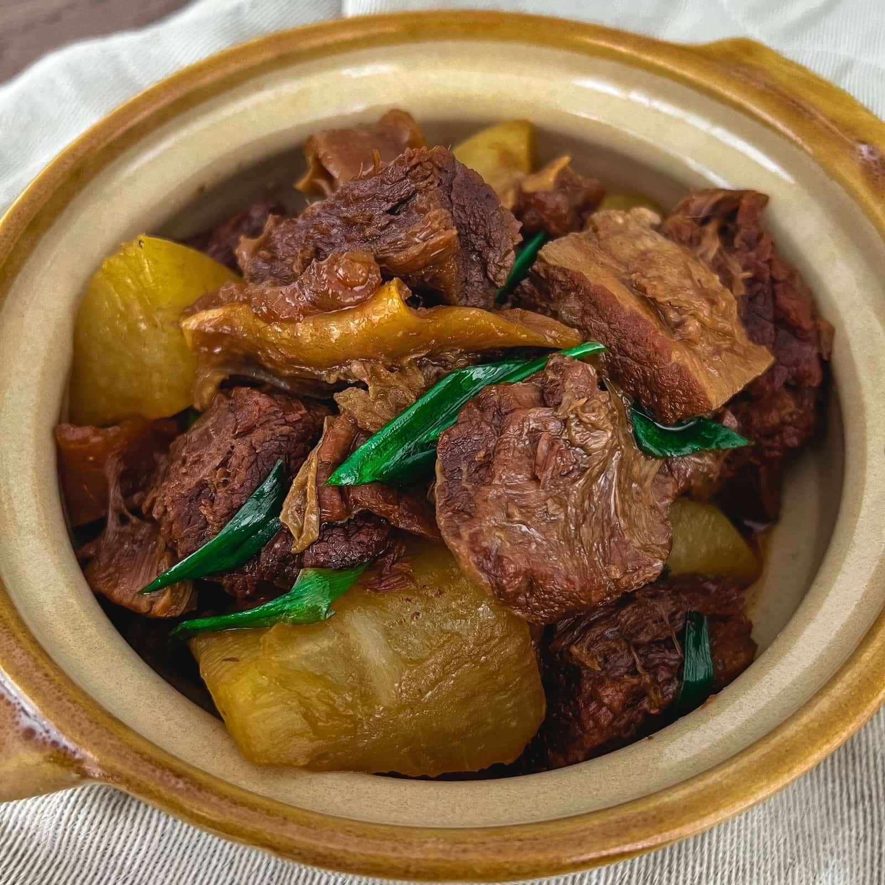

Braised Beef with Daikon

A cozy stew inspired by East Asian flavors with beef and daikon radish.
This stew is a pleasure of mine to make and consume. The beef becomes so tender and the daikon helps compliment the unctiousness
of the beef. In addition, this can be easily handled by the Instant Pot!
Ingredients
- 3 pounds beef flank, cut into 2-3 inch pieces
- 2 Tbsp cooking oil
- 3 inch knob of ginger, sliced
- 3 tbsp light soy sauce
- 2 Tbsp dark soy sauce
- 1/2 cup Shaoxing Wine
- 1 Tbsp Oyster Sauce
- 1 Tbsp hoisin sauce
- 1 Tbsp sugar
- 3 pieces star anise
- 6 cloves of garlic, crushed
- 3 bay leaves
- 2 lbs daikon radish, cut into 2 inch chunks
- 4 tbsp water
- 3 tsp cornstarch
- 3 stalks of scallions, cut into 1 inch pieces
Directions
- Add the beef into a pot of cold water and bring to a boil. Let it boil for 2 minutes, drain, rinse and set aside.
- Set Instant Pot to saute, add in the oil and wait until shimmering. Add in the ginger and garlic and cook for 3 minutes, or until golden brown.
- Add the beef, Shaoxing wine, light soy sauce, dark soy sauce, oyster sauce, hoisin sauce, star anise, bay leaves, and sugar.
- Seal the Instant Pot and pressure cook on high for 40 minutes. Allow pressure to release naturally.
- Add in the daikon radish and mix well.
- Seal the Instant Pot and pressure cook on high for 10 minutes. Use the Quick Pressure release valve.
- Set the Instant Pot to Saute. Mix the water and cornstarch into a slurry then slowly stir that into the stew to thicken.
- Salt to taste, garnish with green onion, and serve!